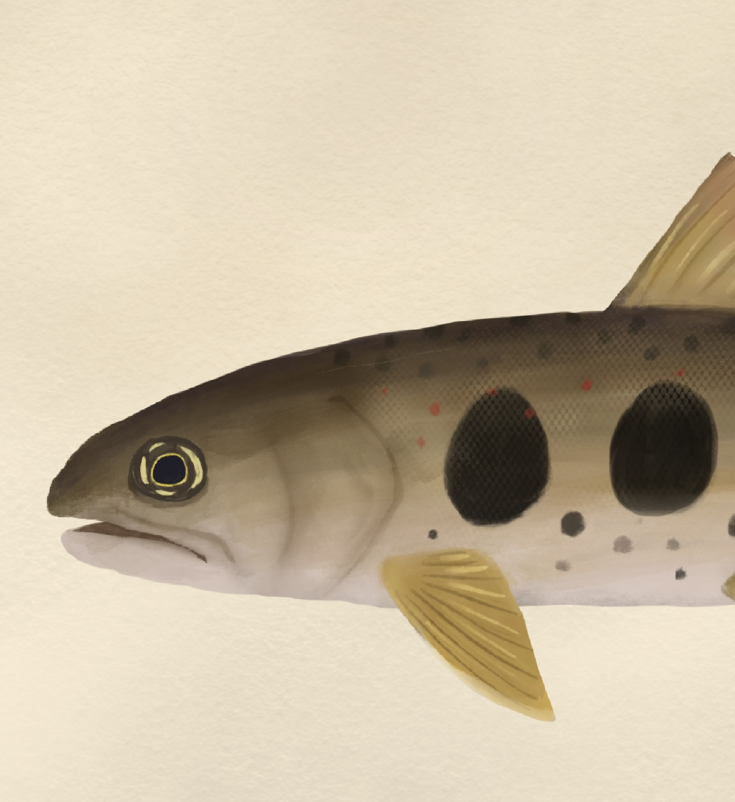

Profile
Shohei K. Noda | 野田 祥平
-
職名：研究開発職 (Bioinfomatician)
学位：修士 (理学)
メール：snoda2108[@]gmail.com
Experience | 経歴
-
2025年 - 現在：会社員・研究開発職
2022年 - 2025年：学振特別研究員(DC1)
2022年 - 2025年：京都大学 理学研究科 生物科学専攻 博士課程
2020年 - 2022年：神戸大学 理学研究科 生物学専攻 修士課程
2016年 - 2020年：東海大学 海洋学部 海洋生物学科
Keywords | キーワード
-
生活史変異 / 家系分析 / ゲノム / 個体群動態 / サケ科魚類
ゲノム解析 / トランスクリプトーム解析 / エピゲノム解析 / シングルセル解析
Linux / R / Python / Docker / Nextflow
Research funds | 研究費獲得履歴
-
2023 - 2025年 | 日本学術振興会 科学研究費助成事業 特別研究員奨励費「家系分析に基づく、アマゴの生活史多様性が創発する個体群動態の安定化機構の解明」
2023 - 2024年 | 文部科学省 科学研究費助成事業 新学術領域研究『学術研究支援基盤形成』 先進ゲノム支援」（先進ゲノム解析研究推進プラットフォーム）